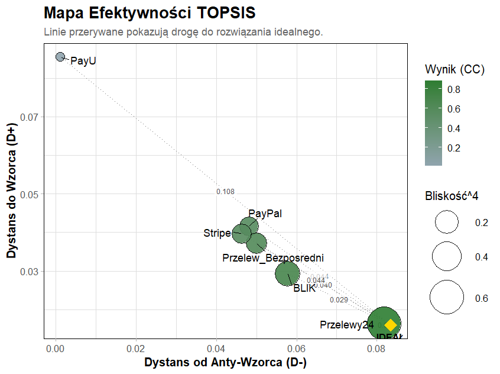

Sekcja 1
PaySelectR w prostym języku
Wybór operatora płatności to strategiczna decyzja, która wpływa na zyski oraz zaufanie Twoich klientów. Pakiet PaySelectR zamienia niepewność w twarde dane, pomagając analitykom i właścicielom firm wybrać optymalną bramkę płatniczą na podstawie wielu kryteriów jednocześnie.
Problem
Wielokryterialna ocena bramek płatniczych pod kątem kosztów, technologii i jakości, mająca na celu minimalizację ryzyka biznesowego przy wyborze operatora.
Użytkownik
Właściciele eCommerce oraz analitycy finansowi szukający przejrzystej, matematycznej podstawy do podjęcia strategicznej decyzji o integralności płatności.
Wynik
Wskazanie optymalnego dostawcy (najbliższego rozwiązaniu idealnemu) wraz z potwierdzeniem odporności rankingu na zmianę metodologii obliczeń.
Sekcja 2
Dane wejściowe
Sprawdź, jak wyglądają dane wejściowe dla analizowanych systemów płatności. W poniższym zestawieniu porównujemy cztery popularne rozwiązania pod kątem kosztów oraz parametrów technicznych. Dane zostały przygotowane przy użyciu procedury generowania danych (DGP), która symuluje rzeczywiste warunki rynkowe. Dzięki temu możemy przetestować, jak algorytmy MCDA reagują na zróżnicowane oferty operatorów.
| Alternatywa | Bezpieczeństwo (max) | Prowizje (min) | Łatwość integracji (max) | Zasięg międzynarodowy (max) | Typ |
|---|---|---|---|---|---|
| PayPal | 7.9 | 2.2% | 6.0 | 5.1 | Portfel elektroniczny |
| Przelewy24 | 8.0 | 2.2% | 5.8 | 4.4 | Bramka Płatnicza |
| Stripe | 7.6 | 1.8% | 5.8 | 4.9 | Agregator płatności |
| BLIK | 8.0 | 2.1% | 4.8 | 5.1 | System mobilny |
| PayU | 8.6 | 2.1% | 4.3 | 5.5 | Bramka Płatnicza |
| Przelew Bezposredni | 7.9 | 1.6% | 6.2 | 4.5 | Tradycyjny przelew |
Przygotowanie modelu w R:
Po wczytaniu powyższych danych, definiujemy strukturę modelu za pomocą dedykowanej składni. Pozwala to na automatyczne przypisanie kryteriów do grup: Koszty, Techniczne oraz Jakość.
# Definicja grup kryteriów
skladnia <- "
Koszty_Finansowe =~ prowizje;
Latwosc_Techniczna =~ integracja_latwosc + implementacja_latwosc;
Jakosc_i_Zasieg =~ szybkosc_platnosci + bezpieczenstwo + obsluga_klienta + zasieg_miedzynarodowy + akceptacja_transakcji
"
# Tworzenie macierzy decyzyjnej z surowych danych
model <- przygotuj_dane_mcda(dane = pay_select_dane_surowe, skladnia = skladnia, kolumna_alternatyw = "Alternatywa")
Sekcja 3
Rozmywanie danych
Kolejnym krokiem po zdefiniowaniu struktury modelu jest transformacja wartości do postaci liczb rozmytych.
Dzięki temu eliminujemy problem „sztywnych granic” i lepiej oddajemy niepewność rynkową.
W pakiecie PaySelectR każda ocena x jest reprezentowana jako trójkąt
(l, m, u), co pozwala na uzyskanie rankingu odpornego na drobne wahania danych.
Proste wyjaśnienie: jeśli oceniamy bezpieczeństwo na 7, to pakiet pamięta, że realna ocena może być trochę niższa albo trochę wyższa.
TFN = (x - 1, x, x + 1), ograniczone do skali 1-9
wynik ostry = (l + 4m + u) / 6
Sekcja 4
Wagi kryteriów (BWM i Entropia)
W systemie PaySelectR wagi nie są przypadkowe. Pakiet oferuje użytkownikowi slastyczność i wybór pomiędzy dwoma zaimplementowanymi podejściami do wyznaczania ważności kryteriów:
- • Metoda BWM: Zgodnie z naszą analizą, najważniejszym kryterium (Best) jest Bezpieczeństwo, natomiast najmniej istotnym (Worst) są Prowizje. Pozwala to promować stabilnych operatorów.
- • Metoda Entropii: System dodatkowo bada, jak bardzo oferty różnią się między sobą. Jeśli wszyscy dostawcy oferują podobne bezpieczeństwo, algorytm automatycznie skoryguje wagi, by skupić się na cechach, które faktycznie ich różnią (np. na integracji).
Na potrzeby prezentacji wyników niniejszego badania skupiono się na metodzie BWM, która odzwierciedla piorytety biznesowe oraz gwarantuje, że kluczowe dla rynku wartości pozostały fundamentem decyzji.
Sekcja 5
Ranking główny i meta-ranking
Główną metodą w pakiecie jest Fuzzy TOPSIS. To zaawansowany algorytm, który ocenia każdą bramkę płatniczą na podstawie jej dystansu od tzw. „rozwiązania idealnego”. System oblicza dwa parametry: D+ (jak blisko jesteśmy ideału) oraz D- (jak daleko jesteśmy od najgorszej możliwej opcji). Ostateczny wynik, czyli współczynnik CC (Closeness Coefficient), wskazuje zwycięzcę - im wyższa wartość (bliższa 1.0), tym lepiej oferta pasuje do wymagań.

Dodatkowo, pakiet PaySelectR przeprowadza Meta-ranking. Jest to proces weryfikacji, w którym porównujemy wyniki TOPSIS z innymi metodami. Dzięki temu mamy pewność, że wskazany lider jest stabilny statystycznie,. a wybór bramki płatniczej nie jest dziełem przypadku, lecz wynikiem matematycznej zgody między wieloma algorytmami MCDA.
| Alternatywa | R_VIKOR | R_TOPSIS | R_WASPAS | R_MOORA | R_PROMETHEE |
|---|---|---|---|---|---|
| Przelewy24 | 1 | 1 | 1 | 1 | 1 |
| Przelew_Bezposredni | 2 | 3 | 2 | 2 | 2 |
| BLIK | 3 | 2 | 3 | 3 | 4 |
| Stripe | 4 | 4 | 5 | 4 | 5 |
| PayPal | 5 | 5 | 4 | 5 | 3 |
| PayU | 6 | 6 | 6 | 6 | 6 |
Najlepsza alternatywa
Przelewy24
Czy ranking jest stabilny?
Tak
Sekcja 6
Jak odtworzyć analizę
Poniższy fragment kodu umożliwia pełną weryfikację obliczeń oraz samodzielne odtworzenie wyników rankingu w środowisku R.
# instalacja
devtools::install_github("dontdothatb/PaySelectR")
library([PaySelectR])
# dane i analiza
data("pay_select_dane_surowe")
macierz <- przygotuj_dane_mcda(dane = pay_select_dane_surowe, skladnia = skladnia, kolumna_alternatyw = "Alternatywa")
res_topsis_bwm <- rozmyty_topsis(macierz_decyzyjna = macierz, typy_kryteriow = c("min", "max", "max"), bwm_najlepsze = c(8,3,1), bwm_najgorsze = c(1,4,8))
plot(res_topsis_bwm)
tabela_apa(res_topsis_bwm)